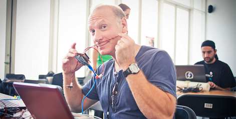
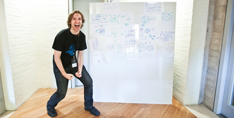

FOREWORD
Mozilla is about the future of the web. But it's also about a certain ethos: an ethos of tinkering, hacking and making. Making things FOR others TO build on. This is a big part of what brought me to Mozilla a few years back. So, when I first started asking: "what can we do beyond Firefox to shape the future OF the web?" I looked around for others with this ethos.
I quickly found them in the world of learning. People tinkering with the academy. Hacking accreditation. Building new tools and paths to help all of us learn. People who looked a lot like Mozillians. Inspired, we decided to do an experiment: gather 400 tinkerers, hackers and makers in Barcelona, half from the world of the web and half from the world of learning, to see what they might build. We called it the Mozilla Learning Freedom and the Web Festival.
We asked Anya Kamenetz – and the participants of the Mozilla Festival – to take a snapshot of this experiment in action. The result is this book and the accompanying web app. Almost a year later, it’s amazing to look back at this snapshot. The ideas, inventions and friendships sparked in that Barcelona square are more than we could have hoped for.
Of course, the experiment itself has yielded much more than what you will see in this snapshot. Barcelona helped Mozilla find a clear focus on learning that both typifies and encourages this ethos: helping people learn how to be makers on the web.
Mozilla's Hackasaurus web literacy program, the School of Webcraft, the HiveNYC learning network and the Open Badges platform are all part of this. Learning by making, and learning about making the web, is now something Mozilla is now committed to in a major way.
Even bigger: Barcelona sparked a conversation about how the future of learning and the future of the web are intertwined, and about the role both play in fueling creativity, innovation and common wealth. This is a conversation that is growing as we speak.
Hopefully, this book will help you find an entry point into this conversation. A place to grab hold so you can tinker, hack and make the future of learning in your own way.
Learning :
The natural, unstoppable process of acquiring knowledge and mastery.
The vast majority of the learning in your life doesn't happen when you're a kid in school. We do it everywhere, all day long, by reading, writing, conversing, tinkering with the world around us, playing around, solving problems, asking questions, and messing up. A teacher can't make you learn, any more than a coach can run a race for you. It's something the learner drives and seeks. We're all teachers and learners.
{kind=link}
The Web:
A set of building blocks that anyone can use to invent, build, connect, and bend things in the digital world.
Rules, protocols, and languages like TCP/IP, HTML, JavaScript, and more. Like any language, or like the rules of mathematics, they are owned by no one, and available to anyone who wants to create online. Like a set of Legos, they are fixed pieces that can be reassembled into anything you imagine. This system has helped us create wealth, beauty, and human connection of a nature and scale that was barely imaginable 25 years ago. And we've all done it. Everyone. Together.
{kind=link}
Freedom:
The right to access, remix, copy, and share, generating new ideas from the old.
These are the founding freedoms of the digital world—"free" as in "free software." The web doesn't function without the ability to look under the hood, get your hands dirty, and fix what doesn’t work. But these kinds of freedoms weren't born in the 20th century. They are central elements for the flourishing of all intellectual life. And learners, especially, could use a little more freedom.
{kind=link}